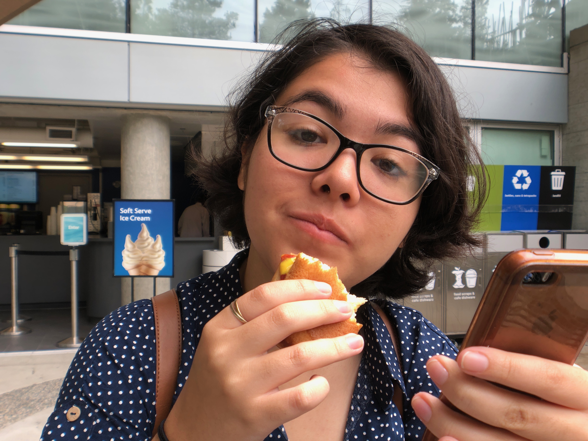

All of my years has led me to my dream- my dream to become an animator. I plan to achieve this career by studying the methods of both past and recent animators. I also plan to go to college with this career in mind as my major so I can learn new ways to animate from traditional to 3D. The reason I chose to become an animator is because in seemed like the perfect balance between two of my favorite pasttime during middle school: drawing and writing. I used to write simple poems and short stories and at that point, I thought I could become an author. But I did not want to abandon my love for drawing, so the next best thing was becoming an illustrator. That did not seem to satisfy me either. Then the idea of animation came to me when my parents and I spent a night watching Disney Pizar's Wall-E, and at that moment I know that animation was going to be the perfect career for me.
I am naturally artistic and I am able to adapt to new mediums of art. I am known to be creative and cooperative towards others, including students, teachers, and interested clients. I have worked mainly on traditional art including oil, pencil, charcoal, etc. But currently, I am practicing digitally and I am learning new platforms such as Adobe.
In high school, I have joined a total of three AP courses and two Honors courses throughout the 4 years I've been in Palm Desert High School. I have also taken electives such as Computer Science Principles, AP Studio Art, and Film and Broadcasting, which I plan to use in my future career. Through these experiences, particularly difficult classes, I have learned to be self-motivated and supportive of my peers. Because of my experiences with friendships and high school, I have become patient and responsible.
Through experience, I have learned to adapt and I have learned throughout my interests and strengths to gain knowledge what I want to become in my future. Thank you for taking the time to read about me, and feel free to explore the rest of my website.